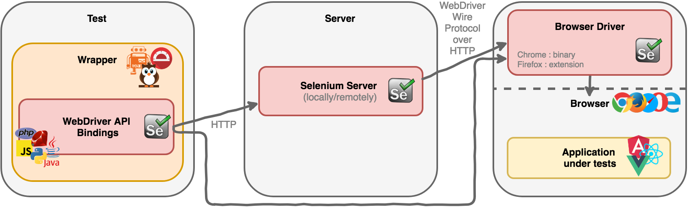
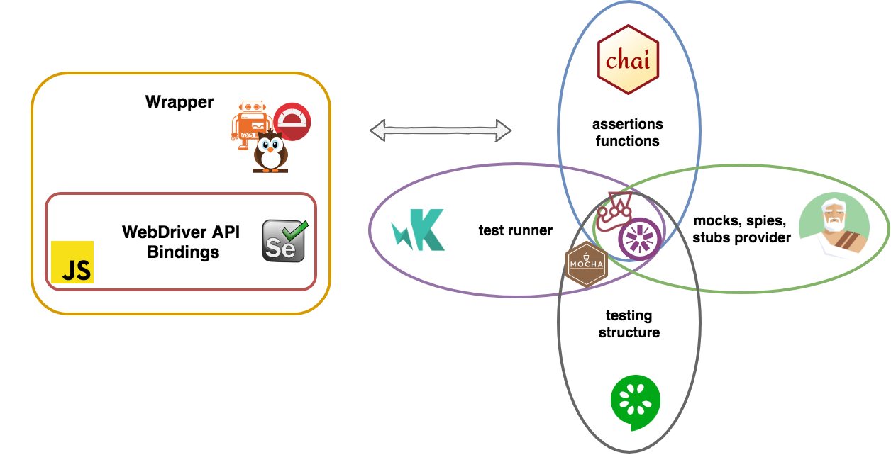
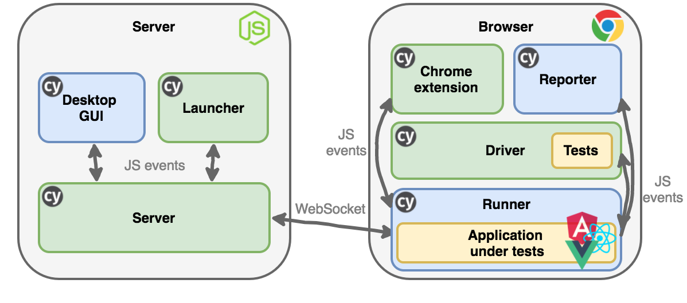
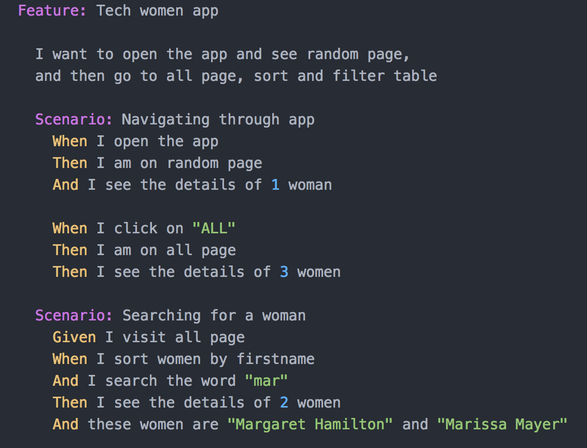

(r)evolution?
Introduction

Why E2E Testing?
- ensure all sub-systems work properly together
- prevent bugs and regression
 Selenium
Selenium
What is it, exactly?
How does it work?
📦 Selenium Architecture

🛠️ 3rd party tools

☠️ Problems
- Complicated to setup
- Hard to debug
- Slow
" The web has evolved. Finally, testing has too."
🎁 All-in-one testing framework
- Built on top of Mocha
- Uses Chai for asssertions
- Sinon brings mocks, stubs and spies
⚙️ Setup

WRITING TESTS
- Uses tools that already exists and familiar with
- Easy to read and understand
- Unit tests, integration tests, e2e tests
RUNNING
- Runs as fast as the browser can render content
- Automatic waiting
- Reloads whenever tests are updated
DEBUGGING
- Readable error messages
- Time travel
- Access to developer tool
- Screenshots and videos
📦 Cypress Architecture

⚖️ Trade-off
- only JavaScript support
- no multi-tab or multi-window support
- doing things outside of the browser may take a little extra work
🗺️ Roadmap
3.1.0 released on 8/13/2018
- Cross-browser support
- Native events: file upload and download, keyboard events, mobile events
- Improving Unit Tests performance
🚀 CI/CD
- all CI providers supported
- headless only for electron
- several Docker images availables
Cucumber

💣 The final battle
|
Cypress |
Selenium |
| Speed |
👍👍 |
👍 |
| Reliable |
👍👍 |
👍 |
| Remote execution |
❌ |
👍👍 |
| Parallel execution |
👍 |
👍👍 |
| Documentation |
👍👍 |
👍 |
| Community |
👍 |
👍👍 |
| Cross-browser |
🕓 |
👍 |
| Dashboard |
public 👍 private 💶 |
❌ |
Conclusion
- Enough of slow and flaky tests
- With Cypress, testing is easy, fast and reliable
- Developers can (finally) start loving it
- But too young yet